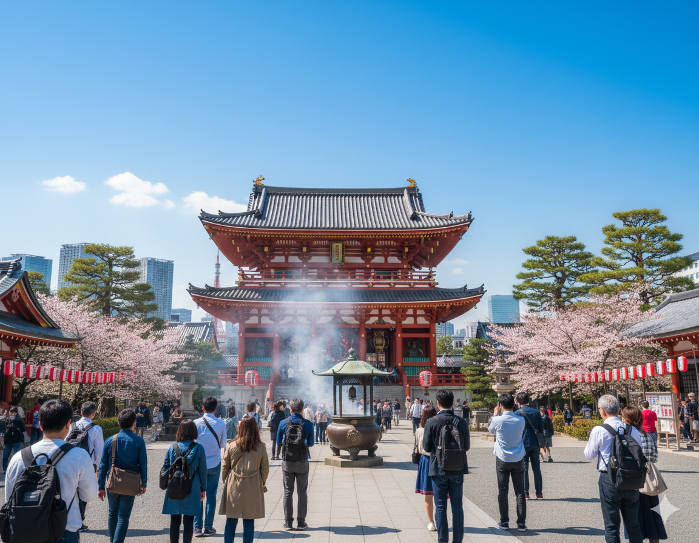
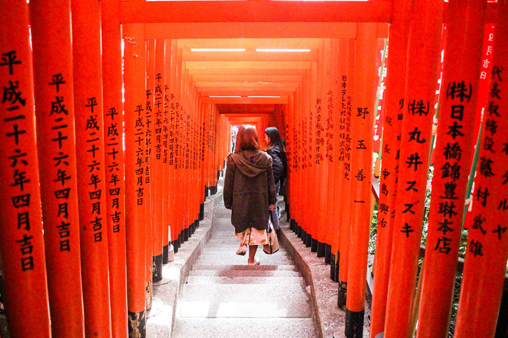
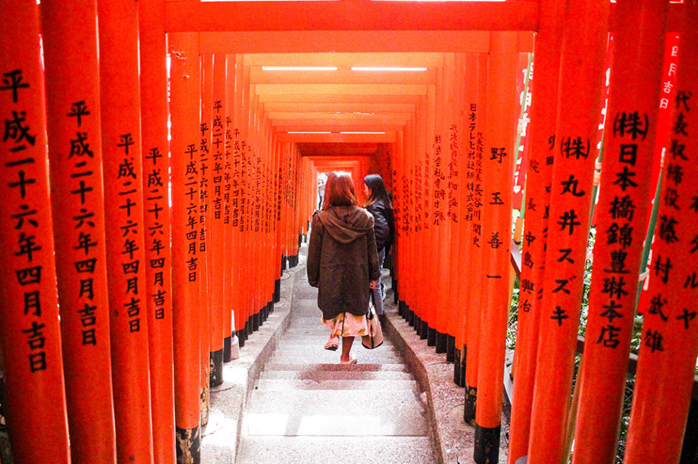
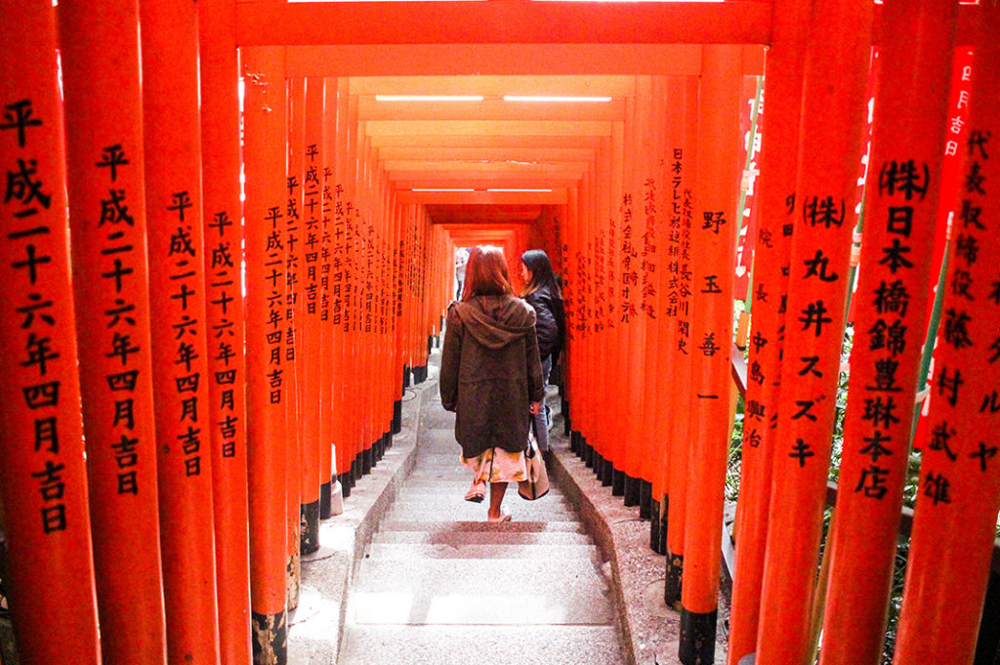
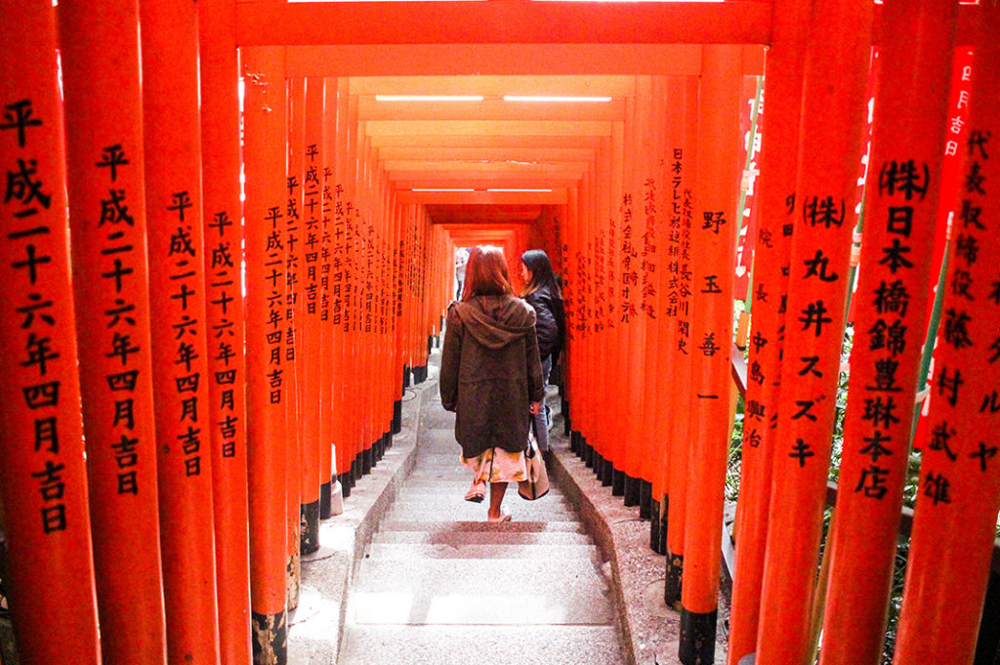

$2800
¡En hasta 12 cuotas!
Viaja pagando en hasta 12 cuotas con tarjeta, al contado en crédito con un descuento del 5% ¡o!

 




Japón es una ciudad vibrante y cosmopolita, con sus templos históricos, museos de arte moderno y rascacielos icónicos. Y conoce los diferentes paquetes que te ofrecemos para que tu viaje sea inolvidable.
Ver detalles
Osaka es una ciudad animada y moderna en Japón. La ciudad es famosa por su deliciosa gastronomía y por ser un excelente punto de partida para explorar otras ciudades japonesas cercanas. Es una ciudad que combina tradición y modernidad.
Ver detallesViaja pagando en hasta 12 cuotas con tarjeta, al contado en crédito con un descuento del 5% ¡o!

Tuve una experiencia inolvidable. El paquete de Japón me permitió explorar desde templos antiguos hasta ciudades modernas. ¡Y el precio fue accesible, lo recomiendo!
Mi viaje a Tokio fue increíble. El itinerario personalizado me permitió hacer mucho en poco tiempo. ¡Superó mis expectativas y ya quiero viajar con Jornada de nuevo!
¡Mi viaje a Osaka fue inolvidable! Jornada organizó todo perfectamente, lo recomiendo sin dudarlo!